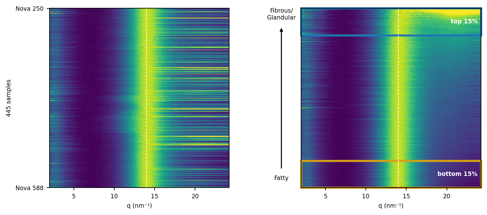

Code
print(f"{len(all_names)} samples from {len(set(map(ne.row_nova, all_names)))} patients, Nova {NOVA_RANGE[0]} onwards")
plt.rcParams["font.size"] = 7
fig, axes = plt.subplots(1, 2, figsize=(8, 3.9))
for ax in axes:
ax.set_box_aspect(1)
for ax, image_rows in ((axes[0], all_rows), (axes[1], all_rows[all_by_water])):
covered = np.flatnonzero(np.isfinite(image_rows).all(axis=0))
columns = slice(covered[0], covered[-1] + 1)
low, high = np.nanpercentile(image_rows[:, columns], (1, 99))
left, right = q[columns][[0, -1]]
ax.imshow(image_rows[:, columns], aspect="auto", cmap=cmap, vmin=low, vmax=high, interpolation="nearest",
extent=(left, right, len(image_rows), 0))
ax.set(xlabel="q (nm⁻¹)", xlim=(2, right))
ax.set_xticks([5, 10, 15, 20])
ax.axvline(14, color="white", ls="--", lw=0.8)
for (start, stop), colour, text in (((0, all_part), TOP_COLOUR, f"top {PART}%"),
((len(all_rows) - all_part, len(all_rows)), BOTTOM_COLOUR, f"bottom {PART}%")):
axes[1].add_patch(plt.Rectangle((2, start), right - 2, stop - start, fill=False, edgecolor=colour, lw=2.5, clip_on=False))
axes[1].text(right - 0.4, (start + stop) / 2, text, color="white", ha="right", va="center", fontweight="bold")
axes[0].set_yticks([0.5, len(all_names) - 0.5], [f"Nova {ne.row_nova(all_names[0])}", f"Nova {ne.row_nova(all_names[-1])}"])
axes[0].set_ylabel(f"{len(all_names)} samples")
axes[1].set_yticks([])
axes[1].annotate("", xy=(-0.11, 0.9), xytext=(-0.11, 0.1), xycoords="axes fraction",
arrowprops=dict(arrowstyle="-|>", color="black", lw=1.2), annotation_clip=False)
axes[1].text(-0.11, 0.07, "Fatty", transform=axes[1].transAxes, ha="center", va="top")
axes[1].text(-0.11, 0.93, "Fibrous/\nGlandular", transform=axes[1].transAxes, ha="center", va="bottom")
fig.subplots_adjust(left=0.09, right=0.98, bottom=0.1, top=0.97, wspace=0.4)
plt.show()
plt.rcParams["font.size"] = 10445 samples from 251 patients, Nova 250 onwards